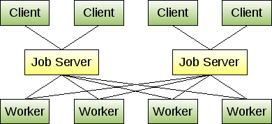

Posible arquitectura de Nimbox.
Diseño

Diseño.
Basado en: "Service-Oriented Architecture."
¿Por qué SOA?
Básicamente porque, queremos un sistema distribuido.
De monitoreo...Ahora un poco más en serio...
- Independencia.
- Reemplazo de funciones.
- Aislar problemas.
- Facilidad.
- Minimización del riesgo de tiempo de inactividad.
- Toma de decisiones.
¿Cómo sería la estructura?
Nodo central.
Compuesto por un Nagios Central.

¿Por qué?
- Independencia.
- Hacer un paquete único.
- Escalabilidad Horizontal.
- Única configuración.
- Disponibilidad.
- Según yo.
Contendrá:
- Docker
- Kubernetes
- Nagios Por ahora...
- *Pasivo*
- Plugins (Nagios)
- Nginx
¿Por qué de lo anterior?
Docker: La portabilidad. Separación. Posibilidad de trabajar diferentes versiones de apps...
Kubernetes: Orquestación. Es quien manejará la escalabilidad. Integración con Docker.
Nagios: En algún momento Nimbox confió en el...
Requerimientos:
¿cuál sería el tamaño mínimo del core?
Está en veremos...
Asumiendo que lleguemos a 50 Workers:
- 2cores.
- 1-4 RAM
- 40GB
- 250 Servicios.
Cada core, creará 2 workers como mínimo.
¿Cómo sería la estructura?
Nodo Worker.
Básicamente, un Nagios hijo.
¿Por qué?
- Independencia.
- Hacer un paquete.
- Escalabilidad Horizontal.
- Configuración dependiente.
- Disponibilidad.
- Según yo.
- Activo.
Contendrá:
- Docker
- Nagios *Activo*
- Plugins (Nagios)
¿Por qué de lo anterior?
Nagios: En algún momento Nimbox confió en el...
La idea es no tener muchas configuraciones regadas.
De esta forma, delegando en Kubernetes, la disponibilidad, conexiones, entre otras, no necesitamos más.
Importante: Aislar problemas.
Requerimientos:
¿Cuál sería el tamaño mínimo de un worker?
Debo definir, cuántos servicios usará 1 caja Nimbox.
Workers por país.
Implicaciones de Nagios.
Adaptarnos a su modelo:
- Nagios Configuración principal.
- Crear objetos.
- Crear grupos.
- Definir templates.
- Definir comandos.
O podemos adoptar Nagios, desde su código fuente.
Mod-Gearman
Es un modelo basado en plugins.
Gearman.
¿Qué es gearman?
Gearman provides a generic application framework to farm out work to other machines or processes that are better suited to do the work. It allows you to do work in parallel, to load balance processing, and to call functions between languages.
Así es el modelo de Gearman

Así funciona
Así funciona Gearman:
Por defecto, crea una conexión usando el protocolo TCP, por el pueto 4730. Y la comunicación es, como la imagen anterior.
Todos los paquetes, enviados desde el "job server" son tomados como una respuesta. Y si es al "job server" es una petición.
Todas estas comunicaciones entre el servidor y los workers es en binario.
Eventos:
Es todo aquello que requiera acción humana. Y debe ir notificada a algún Trabajador en Nimbox
Status:
Es una alarma que luego de cierto tiempo, debe ser un evento.
Workflow Core.
- 0.- Consultar si existen Workers.
- 0.1.- Si no eisten, los crea con la configuración mínima.
- 0.2.- Status
- 1.- Consulta el estado de los Workers.
- 1.1.- Si no, crea un evento.
- 2.- Consulta los servicios del worker.
- 2.1.- Crea grupos.
- 2.2.- Si no, envía un evento.
Workflow Core.
- 3.- Manda a ejecutar permisos.
- 4.- Recibe el status de la ejecución anterior.
- 4.1.- Si no, devuelve un evento.
- 5.- Muestra la información recibida.
Workflow Workers
- Es creado por un core.
- 0.- Valida su configuración.
- 0.1.- Devuelve un evento.
- 1.- Espera por petición del core, sobre sus cajas.
- 1.1.- Devuelve un status.
- 2.- Consulta/ejecuta el estado en sus cajas nimbox.
- 2.1.- Devuelve un status y un evento.
Workflow Workers.
- 3.- Consulta/ejecuta los servicios en sus cajas nimbox.
- 3.1.- Devuelve un status y un evento.
- 4.- Busca el resultado.
- 4.1.- Devuelve un status
- 5.- Lo devuelve al core.
- Ejecuta respaldos...
Lo que me falta:
- Saber cuáles serán los servicios a ejecutar.
- Cuantos servicios serán...
- Identificar los problemas reales.
- Desacoplar funciones.
- Otros criterios de diseños.
- Estudiar: Zenoss, Zabbix, Prometheuos, Pandora FMS, OpenNMS, Icinga, Munin...
- Costos. (Tampoco es que sea muy importante esto, pues...)
No. No hay sección de preguntas...